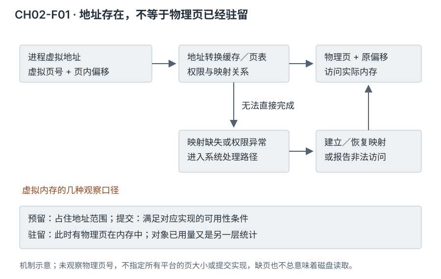
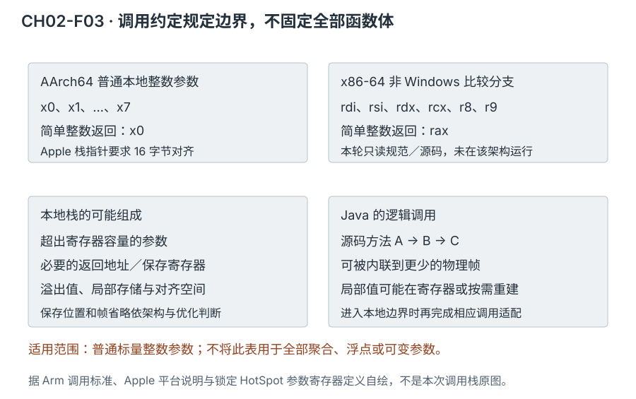

第一篇 · 第 2 章
理解 Java 虚拟机所需的计算机基础
处理器和操作系统的哪些机制，决定了虚拟机的实现方式与运行成本？
Java 虚拟机（Java Virtual Machine，JVM）建立在具体处理器和操作系统之上。中央处理器（Central Processing Unit，CPU）的寄存器、缓存、执行流水线，操作系统的虚拟内存、线程和系统调用，都影响一段类文件怎样运行。这里只补齐解释这些机制所需的基础，不用一次负载去比较硬件性能。
本章复用第 1 章的 ProgramJourney，没有新建相似的演示程序。实际平台为 macOS 27.2、Apple M1 Pro、AArch64；x86-64 部分是调用约定与锁定实现的对照研究，没有冒充在该平台运行。图、宽表和长代码可局部横向滚动。
同一个进程，为什么有多种内存大小
以初始堆 32、最大堆 128 兆二进制字节（mebibyte，MiB）启动贯穿程序。观察窗口中，ps 的虚拟大小超过数百吉字节，驻留集约为几十 MiB；GC.heap_info 的对象已用量又只有几 MiB。它们并不互相否定，而是在回答不同问题。
| 工具与口径 | 实际记录 | 回答什么 |
|---|---|---|
| ps：虚拟大小 | VSZ=490639248，单位为 1024 字节 | 进程地址空间的统计，不是物理内存需求 |
| 驻留集大小（Resident Set Size，RSS） | ps：RSS=59248，单位为 1024 字节 | 该进程当前驻留集的系统口径 |
| vmmap：physical footprint | 37.5M | 系统的物理内存归账口径，与 RSS 不同 |
| GC.heap_info | reserved 131072K；committed 34816K；used 5594K | 收集器报告的堆范围、提交量与已用量 |
| 本地内存跟踪（Native Memory Tracking，NMT） | 总 reserved 1614150KB；committed 112038KB | HotSpot 跟踪的分类申请，不覆盖所有进程来源，也不是 RSS |
这些原始单位保留工具拼写，其解释见运行记录。不能把所有 reserved 相加后当作已经消耗同等物理内存，也不能把两种工具数字相减后直接称为泄漏。先厘清地址、映射、提交与驻留，再讨论对象占用才有基础。
2.1 处理器、寄存器与缓存层次
2.1.1 吞吐能力与一条依赖链的等待不同
寄存器保存执行指令直接操作的值和地址；指令流水线让取指、译码、执行等不同工作重叠。吞吐量描述一段时间完成多少工作，延迟描述某项工作从开始到结果可用的等待。即使处理器能同时推进多条指令，后续指令依赖前一条结果时，也不能无条件提前使用尚未产生的值。
分支预测让处理器在条件结果确定前推测下一条路径；预测失败需要放弃不应提交的工作。指令乱序与推测不等于程序可以产生任意结果，架构的可观察行为仍有约束。虚拟机编译器会根据依赖和目标机器选择代码，源文件的行数既不是实际指令数，也不是运行成本的可靠刻度。
2.1.2 局部性、一致性与伪共享
缓存以缓存行为单位保存从更低层存储取得的数据。相邻数据被一起取得，近期使用的数据可能被再次命中，因而顺序访问和重复使用常有局部性收益。共享缓存行在多个核心之间还要满足一致性协议：某个核心的写入可能使其他核心中的相关副本失效或需要协调。
伪共享发生在逻辑上独立的数据落在同一缓存行中，多个核心写它们时仍竞争这一硬件单位。它不是因为两个变量引用同一 Java 对象才必然发生，也不需要两个线程写同一字段。本机 sysctl 查询的缓存行大小为 128 字节；不能给所有架构固定套上一个常见数字。对象字段的实际排列、对齐和访问模式共同影响结果，本章没有编写压力程序来制造吞吐差异。
一致性主要约束共享位置或缓存行的数据副本，不直接给所有不同地址提供一套源码顺序。缓存命中也不是 Java 并发语义中的“可见性保证”。后者需要语言及运行时的同步规则，2.5 再接上这一层。[S04]
2.2 虚拟内存与物理内存
2.2.1 页表把地址表示与物理页分开
进程操作的是虚拟地址。地址中的虚拟页号参与页表查询，页内偏移在映射后保持相应位置；处理器会缓存部分地址转换，减少重复查询。映射具有权限和状态，多个进程也可能通过文件映射共享某些物理页。相同的虚拟数值位于不同进程时，不自动指向同一份数据。[S01]

缺页可能需要建立匿名零页、恢复映射、处理写时复制，或从文件／后备存储取得数据，不必每次都读磁盘。访问不允许的地址或权限也可能最终成为错误，而不是“系统总能给它补一页”。页表、保护与缺页是操作系统和处理器协作的机制，Java 堆只是进程中的一部分映射。
2.2.2 预留、提交、触碰与释放分别改变什么
预留通常先占住地址范围，避免被别的映射使用；提交表示满足对应平台／运行时规定的可用条件，不保证所有页已经在物理内存驻留。实际触碰页面可能使系统按需建立或恢复物理页。释放对象、释放分配器内部空间、取消提交与撤销地址映射又是不同步骤，不能用一个“free”概括。
本轮堆报告的范围为 [0x126000000,0x12e000000)，即 128 MiB。NMT 的 Java Heap 分类却报告 139264KB，并将预留范围写成 [0x125800000,0x12e000000)。对照 vmmap 可见，前缀 [0x125800000,0x126000000) 的 8192K 区域不可访问。锁定实现的堆保留逻辑明确区分这种不可访问前缀与有效空间。这说明分类的预留范围与可用堆范围不同，不应悄悄把其中一个数字改写成另一个；具体堆地址布局在第 9—11 章继续研究。[S05]
// CH02-O02，vmmap 实际摘录；不是对象地址
Untagged 125800000-126000000 [ 8192K 0K 0K 0K] ---/rwx SM=NUL
Untagged 126000000-128000000 [ 32.0M 336K 336K 2368K] rw-/rwx SM=PRV这些条目中的 32.0M 是虚拟范围大小，后面的驻留、脏页等列又有自己的含义。不能仅看到一个 Untagged 标签就认定它是 Java 堆；本例是结合堆与 NMT 的明确地址范围完成关联。只读库的共享驻留、保护区和运行时分类也不应混成对象已用量。
2.3 进程、线程与调度
2.3.1 共享资源不等于共享执行位置
同一进程中的线程共享地址空间和进程级文件等资源；每个线程分别具有寄存器状态、栈和调度状态。两个线程访问同一堆对象，不需要把对象复制进各自的栈；各自栈上的引用可以指向同一个对象。反过来，线程自己的调用进度与局部状态也不能合并成一个“进程栈”。

可运行表示线程具备参与调度的条件，正在运行表示此刻占用处理器，等待表示暂时不能推进。Java 的 RUNNABLE 是虚拟机／类库定义的状态，不能直接等同于“某个核心上正在执行”。本轮 main 和 journey-worker 的 Java 状态均为 TIMED_WAITING (parking)，系统 ps -M 则使用自身的 S 状态表示睡眠。两套分类的粒度、时点和语义不同，不能靠同名词机械一一对应。
2.3.2 系统调用、权限级别切换与线程切换
系统调用让用户态程序请求内核完成受保护的操作；进入内核改变执行的权限环境，但执行者仍可能是同一个线程。线程上下文切换则要保存一个线程的执行状态并恢复另一个线程的状态，可能由抢占、阻塞或调度策略引发。两种切换可能关联，也可能分别发生。
本地函数调用也不自动等于系统调用。第 1 章文件通道的本地入口最终使用系统文件能力，平台线程创建路径也依赖平台线程库；但普通计算、许多对象分配快路径和用户态同步操作并不会每次进入内核。本次转储中的 Unsafe.park 是等待路径中的本地边界线索，不能据这张快照计算线程切换次数或等待的全部原因。[S02、S04]
2.4 调用约定与栈布局
2.4.1 函数两端怎样同意参数放在哪里
应用二进制接口（Application Binary Interface，ABI）规定跨编译单元协作的规则，包括参数、返回值、寄存器保存、对齐等。调用者和被调用者必须采用兼容规则，不能一方以为第二个整数在寄存器里，另一方却从某个栈偏移读取。

Arm 的 64 位过程调用标准规定前八个一般参数／结果寄存器；本章以常见的 x0—x7 表示它们的 64 位视图。调用后仍需保持的寄存器由被调用者承担保存恢复责任，调用者临时寄存器中的跨调用活跃值则由调用者负责。栈用来承载溢出参数、保存现场和必要的局部存储；并不要求每个局部变量都有永久固定的栈地址。[S03]
Apple 平台要求栈指针 16 字节对齐，并保留 x18；对栈上传参、窄整数扩展、可变参数等还有自己的细则。x86-64 也不能只说一种约定：锁定 HotSpot 的非 Windows 本地调用分支使用 rdi、rsi、rdx、rcx、r8、r9 六个一般参数寄存器，Windows 分支不同。本章只将源码中明确的分支用于比较，没有把它扩成全部平台的唯一 ABI。
2.4.2 逻辑方法帧不固定等于一个本地物理帧
虚拟机规范用帧解释方法的局部变量、操作数栈及动态链接等信息；具体实现可以把值放在寄存器，内联多个 Java 方法，也能保留用于去优化或诊断的逻辑调用信息。因此 Java 堆栈跟踪中的多个方法，不必对应相同数量的本地物理帧。
HotSpot 源码还区分本地参数寄存器 c_rarg 与内部 Java 调用参数寄存器 j_rarg。在本地边界需要适配，不能把普通 C 函数表直接套给所有 Java 到 Java 的调用。解释帧、编译帧和本地帧的具体组织留给第 13、14、32 章；本章先建立“语义模型与物理表示分别解释”的习惯。
2.5 内存顺序与架构差异
2.5.1 编译器与处理器各有自己的变换空间
编译器可以在语言允许的范围内删去、合并或移动访问；处理器也可能重叠推进访问并用缓冲结构管理完成。即使暂时不考虑处理器的顺序差异，编译器层面的变换也足以说明“源码先写 A 再写 B”不等于所有线程都按该现实时间顺序观察到结果。
屏障是对某类变换或访问顺序施加约束的机制。编译器屏障约束编译器，不必产生硬件指令；硬件顺序约束也不总是同一条“全屏障”指令。它们不等于把全部缓存立刻写回内存，更不等于刷新所有线程的“副本”。Java 的同步语义还需由编译器与运行时共同落实，第 25 章再给出完整动作关系。
2.5.2 相同语义需要不同平台实现
锁定源码中的 BSD x86 OrderAccess 对部分 load/load、store/store 与 acquire/release 路径只使用带 memory clobber 的编译器屏障，而 store/load 路径调用更强 fence；当前 x86-64 分支的该 fence 使用锁定加法。BSD AArch64 则通过编译器 acquire/release fence 内建和全屏障内建表达相应约束。这些是本轮读到的 C++ 运行时实现，不表示每个 Java volatile 操作都逐字执行同一函数。
比较并交换（Compare-and-Swap，CAS）也要区分原子更新与所附带的顺序。x86 实现中可见锁定 cmpxchg，BSD AArch64 路径使用编译器原子比较交换内建，并依据请求的顺序选择约束。编译器可能再按目标能力选择指令。本章没有将某个处理器默认值、具体指令成本或未运行的 x86-64 行为写成实测结果。[S04]
第 1 章的线程协作依靠类库同步契约，而不是“本机缓存恰好及时更新”。换架构不能让 Java 数据竞争自动正确；在一个平台上有限运行没有出现错误，也不能证明另一个平台的所有结果。
怎样取得这些观察
CH02-O01 保留首次运行：原生进程映射成功，但虚拟机附加诊断失败；目标的附加监听线程反复退出。随后保持源码、输入和堆／观察选项不变，以允许诊断的进程启动权限执行 CH02-O02，成功取得所有诊断数据。权限差异是重要环境条件；不能把第一次失败删掉后宣称工具在任意沙箱内都可用。
// 进程号来自当次程序输出，不应照抄旧进程号
ps -p 15216 -o pid,ppid,%cpu,rss,vsz,etime,command
ps -M -p 15216
vmmap -summary 15216
vmmap 15216
jcmd 15216 Thread.print -l
jcmd 15216 GC.heap_info
jcmd 15216 VM.native_memory detail scale=KB原样命令、工具选择和输入见 运行说明；上述显示的是本次命令摘录。NMT 需要在启动时启用，并有自己的跟踪成本；诊断附加会带来线程、类加载等活动，各文件也不是同一瞬间的原子快照。本章没有依据这些数据比较两个平台的性能。
回顾与思考
先区分地址、物理页与对象使用量，区分共享资源与线程执行状态，再理解调用边界和内存顺序。这样才能把 Java 现象对应到系统机制，而不是用一个“内存”或“线程正在运行”包办所有解释。
- 为什么一个 16 吉比字节内存的主机，可以出现数百吉字节的进程虚拟大小？
- 本轮 NMT 的堆预留与收集器报告为何不能直接视为同一个可用堆范围？
- 进入内核后是否必定换了一个线程执行？
- 为什么 Java 逻辑调用栈可能比本地物理帧多？
- 某个屏障不产生本机指令，为什么仍可能不可删除？
第 3 章继续把版本、工具、日志及实现入口组合为可追溯的观察方法；内存预算和线程语义在后续各篇展开。
来源与材料
- S01：Apple 的虚拟内存概念文档，仅用于页表、映射、缺页与写时复制等概念；历史平台数值不用于本机结论。
- S02：本机
ps、vmmap、sysctl的实际输出及手册；Java 开发工具包（Java Development Kit，JDK）25 jcmd 文档。 - S03：Arm 64 位过程调用标准 2025Q1，§6.1、§6.4、§6.8；Apple ARM64 平台调用说明（实际读取官方 Markdown 版本）。
- S04：锁定提交中的两种架构 assembler 参数定义、BSD orderAccess 与 atomic 实现，以及平台线程创建路径；精确文件和符号见证据索引。缓存与流水线部分为概念解释，未推导本机吞吐或延迟。
- S05：同一提交的 memoryReserver.cpp 中 establish_noaccess_prefix、reserve_compressed_oops_heap，以及 reservedSpace.hpp 的 ReservedHeapSpace；支持本例范围分析。